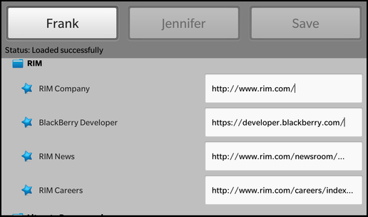

Files:
The DOM Bookmarks example provides a parser and generator for XML Bookmark Exchange Language (XBEL) files that uses Qt's DOM-based XML API to read and parse the files. The SAX Bookmarks example provides an alternative way to read this type of file.

In this example we'll learn how to use the QDomDocument and QDomElement classes to parse, modify and generate an XML document. Additionally we'll see how to generate UI objects (that are described in a QML file) on-the-fly and how to access and modify their properties.
The UI of this sample application consists of three buttons and a container. The first two buttons allow the user to load two different XBEL documents and the third button allows the user to save the currently loaded XBEL document back to file system (including possible changes done to the bookmarks).
The container is the target location for the tree of controls, that visualize the structure of the XBEL document. The XBEL standard defines the elements
The folder is represented by a Container with a folder icon and a title label (FolderItem.qml). It provides a custom property 'tagName' and a property 'title' that is aliased to the 'text' property of the titleField label. So whenever the 'title' property is changed, the 'text' property will be updated.
// Container for the visual representation of a XBEL folder element Container { property string tagName: "folder" property alias title: titleField.text topMargin: 20 layout: StackLayout { leftPadding: 20 } Container { layout: StackLayout { layoutDirection: LayoutDirection.LeftToRight } // A standard ImageView ImageView { imageSource: "asset:///images/folder.png" preferredWidth: 32 preferredHeight: 32 } // A standard Label for the folder title element Label { id: titleField leftMargin: 10 layoutProperties: StackLayoutProperties { } // Defines custom text style textStyle { base: SystemDefaults.TextStyles.SmallText fontWeight: FontWeight.Bold color: Color.White } } } }
The bookmarks are visualized by a Container with a star icon, a title label and a TextField that contains the bookmark URL (BookmarkItem.qml). The TextField is invisible by default and will be faded in when the user clicks on the title label.
// Container for the visual representation of a XBEL bookmark element Container { property string tagName: "bookmark" property alias title: titleField.text property alias url: urlField.text topMargin: 10 leftMargin: 20 layout: StackLayout { leftPadding: 20 } Container { layout: StackLayout { layoutDirection: LayoutDirection.LeftToRight } // A standard ImageView ImageView { imageSource: "asset:///images/bookmark.png" minWidth: 82 minHeight: 62 layoutProperties: StackLayoutProperties { verticalAlignment: VerticalAlignment.Center } scalingMethod: ScalingMethod.AspectFit } // A standard Label for the bookmark title element Label { id: titleField leftMargin: 10 layoutProperties: StackLayoutProperties { verticalAlignment: VerticalAlignment.Center } textStyle { base: SystemDefaults.TextStyles.SmallText color: Color.White } onTouch: { if (event.isDown()) { urlField.visible = !urlField.visible } } } } // A standard TextField for the bookmark url attribute value TextField { id: urlField leftMargin: 10 visible: false layoutProperties: StackLayoutProperties { verticalAlignment: VerticalAlignment.Center } textStyle { base: SystemDefaults.TextStyles.SmallText } } }
A separator is an image of a horizontal line (SeparatorItem.qml).
// Container used to create a separator black visual line Container { property string tagName: "separator" topMargin: 20 layout: StackLayout { leftPadding: 40 rightPadding: 20 } ImageView { layoutProperties: StackLayoutProperties { horizontalAlignment: HorizontalAlignment.Fill } imageSource: "asset:///images/separator.png" } }
The business logic of the application is encapsulated in the class App, which is exported to the UI as '_app'.
// A standard Button Button { id: frank layoutProperties: StackLayoutProperties { spaceQuota: 1 } text: qsTr ("Frank") // Load the selected xbel file on click onClicked: { jennifer.opacity = 0.5; save.opacity = 0.5; frank.opacity = 1.0; _app.load ("frank.xbel"); } }
Whenever the user clicks one of the load buttons, the load() method of the App object is invoked.
// A standard Button Button { id: save layoutProperties: StackLayoutProperties { spaceQuota: 1 } text: qsTr ("Save") // Save the changes to a temporary xbel file in the // application tmp/ directory onClicked: { frank.opacity = 0.5; jennifer.opacity = 0.5; save.opacity = 1.0; _app.save (); } }
If the user clicks the 'Save' button, the save() method of the App object is invoked.
// Container for displaying the loaded XBEL output ScrollView { topMargin: 10 scrollViewProperties { scrollMode: ScrollMode.Vertical } layoutProperties: StackLayoutProperties { spaceQuota: 1 } Container { objectName: "treeContainer" layout: StackLayout { leftPadding: 10 rightPadding: 10 bottomPadding: 10 } } }
The container has the 'objectName' property set, so that it can be looked up from within C++.
Inside the constructor of App we load the main.qml file and retrieve the C++ object that represents the root node of the QML document. With the findChild() method we look up the Container object where we have assigned 'treeContainer' to the 'objectName' property.
App::App() { // Load the main QML file and make the App object available as context property QmlDocument *qml = QmlDocument::create().load("main.qml"); if (!qml->hasErrors()) { qml->setContextProperty("_app", this); Page *appPage = qml->createRootNode<Page>(); if (appPage) { Application::instance()->setScene(appPage); // Retrieve the tree container control from the QML file m_treeContainer = appPage->findChild<Container*>("treeContainer"); } } }
Whenever the user clicks one of the load buttons, the load() method of the App object is invoked with the file name passed as parameter.
void App::load(const QString &fileName) { // Do sanity check if (!m_treeContainer) return; // Update the status property m_status = tr("Loading..."); emit statusChanged(); // Clean all previous generated bookmark controls from the tree container m_treeContainer->removeAll(); // Create the XBEL parser and pass the tree container it will work on XbelParser parser(m_treeContainer); // Open the XBEL file which the user has selected QFile file("app/native/assets/" + fileName); if (!file.open(QIODevice::ReadOnly)) qWarning("unable to open file"); // Parse XBEL file and generate the bookmark controls const bool ok = parser.parse(&file); // Update the status property again if (ok) m_status = tr("Loaded successfully"); else m_status = parser.errorString(); emit statusChanged(); }
Inside load() we first remove all previously created controls from the treeContainer and then use the XbelParser class to parse the XML document and generate new controls inside the treeContainer.
If the user clicks the 'Save' button, the save() method of the App object is invoked.
void App::save() { // Do sanity check if (!m_treeContainer) return; // Update the status property m_status = tr("Saving..."); emit statusChanged(); const QString fileName("tmp/dombookmarks.xbel"); // Open the target file where the modified XBEL document will be written to QFile file(fileName); file.open(QIODevice::WriteOnly); // Create the XBEL generator on the tree container and let it generate the XBEL document from the bookmark controls XbelGenerator generator(m_treeContainer); const bool ok = generator.write(&file); // Update the status property again if (ok) m_status = tr("Saved successfully"); else m_status = tr("Error while saving"); emit statusChanged(); }
Inside save() we try to open the file 'dombookmarks.xbel' inside the applications temp directory and then we use the XbelGenerator class to iterate over the treeContainer, generate the XML document and store it to the file.
The XbelGenerator class contains a reference to the Container instance where the bookmark hierarchy is stored. The actual generation of the XML document is done inside the write() method.
/** * The XbelGenerator is responsible for generating a XBEL document from the * controls in the tree container. * * To generate the XBEL document the XbelParser uses the DOM API of Qt. */ class XbelGenerator { public: XbelGenerator(bb::cascades::Container *treeContainer); // Starts the generation of the XBEL document bool write(QIODevice *device); private: // A helper method that generates an element in the XBEL document for a control void generateItem(bb::cascades::Control *item, QDomElement &parent, QDomDocument &domDocument); // The container object the controls are located in QPointer<bb::cascades::Container> m_treeContainer; };
The XbelGenerator constructor accepts a treeContainer to initialize within its definition.
XbelGenerator::XbelGenerator(Container *treeContainer) : m_treeContainer(treeContainer) { }
The write() method creates a QDomDocument instance and adds the processing instructions and top-level element for a valid XBEL document to it.
Afterwards it iterates recursively over the treeContainer to generate one DOM element for each child control of the container and append the element to the QDomDocument.
At the end write() creates a QTextStream object on the passed in QIODevice and writes out the assembled DOM document to the stream.
bool XbelGenerator::write(QIODevice *device) { // Create a new DOM document QDomDocument domDocument("xbel"); domDocument.appendChild(domDocument.createProcessingInstruction("xml", "version=\"1.0\" encoding=\"utf-8\"")); // Add the root element with the necessary 'xbel' element and version attribute QDomElement rootElement = domDocument.createElement("xbel"); rootElement.setAttribute("version", "1.0"); domDocument.appendChild(rootElement); // Iterate over the controls of the tree container and generate an XBEL element for each of them for (int i = 0; i < m_treeContainer->count(); ++i) generateItem(m_treeContainer->at(i), rootElement, domDocument); const int IndentWidth = 4; // Use a text stream to write out the DOM document in a nicely formatted way QTextStream stream(device); stream.setCodec("UTF-8"); domDocument.save(stream, IndentWidth); return true; }
The generateItem() method accepts a Control object, the parent DOM element and the DOM document. It first extracts the type and the title from the control and then generates a new QDomElement object depending on the tagName, which can either be a 'folder', 'bookmark', or 'separator'. If the control is a Container it will call itself recursively.
void XbelGenerator::generateItem(Control *control, QDomElement &parent, QDomDocument &domDocument) { /** * Retrieve the tag name and title from the control. * These two properties have been set on the controls by the XbelParser. */ const QString tagName = control->property("tagName").toString(); const QString title = control->property("title").toString(); // Depending on the tag name generate a new DOM element in the XBEL document if (tagName == "folder") { QDomElement folderElement = domDocument.createElement("folder"); folderElement.setAttribute("folded", "no"); QDomElement titleElement = domDocument.createElement("title"); QDomText titleText = domDocument.createTextNode(title); titleElement.appendChild(titleText); folderElement.appendChild(titleElement); // Iterate over the child controls of the container const Container *container = qobject_cast<Container*>(control); for (int i = 0; i < container->count(); ++i) generateItem(container->at(i), folderElement, domDocument); parent.appendChild(folderElement); } else if (tagName == "bookmark") { const QString url = control->property("url").toString(); QDomElement bookmarkElement = domDocument.createElement("bookmark"); if (!url.isEmpty()) bookmarkElement.setAttribute("href", url); QDomElement titleElement = domDocument.createElement("title"); QDomText titleText = domDocument.createTextNode(title); titleElement.appendChild(titleText); bookmarkElement.appendChild(titleElement); parent.appendChild(bookmarkElement); } else if (tagName == "separator") { QDomElement separatorElement = domDocument.createElement("separator"); parent.appendChild(separatorElement); } }
The XbelParser contains a reference to the Container that is used to group the bookmarks according to their hierarchy.
/** * The XbelParser is responsible for parsing a XBEL file and generating * controls, that represent the bookmark entries, on the tree container. * * To parse the XBEL document the XbelParser uses the DOM API of Qt. */ class XbelParser { public: XbelParser(bb::cascades::Container *treeContainer); // Starts the parsing of the XBEL document bool parse(QIODevice *device); // Returns a textual representation of the error if one occurred QString errorString() const; private: // A helper method that parses one XBEL folder element void parseFolderElement(const QDomElement &element, bb::cascades::Container *parent = 0); // A helper method that generates a control for a specific XBEL element bb::cascades::Container *createChildItem(const QDomElement &element, bb::cascades::Container *parent = 0); // The container object the controls are created in QPointer<bb::cascades::Container> m_treeContainer; // The textual representation of an error QString m_errorString; };
The XbelParser constructor accepts a Container to initialize the treeContainer within its definition.
XbelParser::XbelParser(Container *treeContainer) : m_treeContainer(treeContainer) { }
The parse() method accepts a QIODevice and passes it to the setContent() method of the QDomDocument, which will cause the QDomDocument to build up the tree of QDomElement from the XML data.
We check then whether the XML data are a valid XBEL file by evaluating the tag name of the top-level element and the version number.
If it is a valid document we start to iterate over the 'folder' elements of the DOM document recursively and call parseFolderElement() on each of them.
bool XbelParser::parse(QIODevice *device) { // Open a DOM document on the XBEL data and report an error if it fails QString errorString; int errorLine; int errorColumn; QDomDocument domDocument; if (!domDocument.setContent(device, true, &errorString, &errorLine, &errorColumn)) { m_errorString = QObject::tr("Parse error at line %1, column %2:\n%3").arg(errorLine) .arg(errorColumn) .arg(errorString); return false; } // Check whether this is a valid XBEL file in the correct version const QDomElement rootElement = domDocument.documentElement(); if (rootElement.tagName() != "xbel") { m_errorString = QObject::tr("The file is not an XBEL file."); return false; } else if (rootElement.hasAttribute("version") && rootElement.attribute("version") != "1.0") { m_errorString = QObject::tr("The file is not an XBEL version 1.0 file"); return false; } // Search for the first <folder> element ... QDomElement child = rootElement.firstChildElement("folder"); while (!child.isNull()) { // ... parse this folder element ... parseFolderElement(child); // ... and search for the next one until the end of the XBEL document is reached child = child.nextSiblingElement("folder"); } return true; }
The errorString() function is used if an error occurred, in order to obtain a description of the error complete with line and column number information.
QString XbelParser::errorString() const { return m_errorString; }
The parseFolderElement() method creates new Control object by calling the createChildItem() method. Afterwards it sets the properties of the control according to the content and attributes of the current DOM element. Then it iterates recursively over the child elements of the folder element.
void XbelParser::parseFolderElement(const QDomElement &element, Container *parent) { // Create a container that will contain all the child controls from this <folder> element Container *item = createChildItem(element, parent); // Read the title from the DOM document ... QString title = element.firstChildElement("title").text(); if (title.isEmpty()) title = QObject::tr("Folder"); // ... and set it as 'title' property on the container item->setProperty("title", title); // Iterate over the children of the <folder> element, read the properties and set them on the control QDomElement child = element.firstChildElement(); while (!child.isNull()) { if (child.tagName() == "folder") { parseFolderElement(child, item); } else if (child.tagName() == "bookmark") { Container *childItem = createChildItem(child, item); QString title = child.firstChildElement("title").text(); if (title.isEmpty()) title = QObject::tr("Folder"); childItem->setProperty("title", title); childItem->setProperty("url", child.attribute("href")); } else if (child.tagName() == "separator") { createChildItem(child, item); } child = child.nextSiblingElement(); } }
The createChildItem() method loads a QML file and returns the C++ object that represents the root node of the QML file. Depending on the current DOM element, different QML files are loaded.
Container *XbelParser::createChildItem(const QDomElement &element, Container *parent) { const QString tagName = element.tagName(); // Use a different QML file depending on the requested XBEL element type const QString qmlFile = (tagName == "folder" ? "FolderItem.qml" : tagName == "bookmark" ? "BookmarkItem.qml" : tagName == "separator" ? "SeparatorItem.qml" : QString()); Container *container = 0; // Load the QML file ... QmlDocument *qml = QmlDocument::create().load(qmlFile); if (!qml->hasErrors()) { // ... create the top-level control ... container = qml->createRootNode<Container>(); // ... and add it to the parent container if (parent) { parent->add(container); } else { m_treeContainer->add(container); } } return container; }
See the XML Bookmark Exchange Language Resource Page for more information about XBEL files.